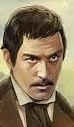
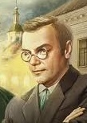
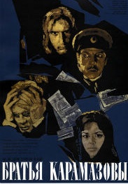
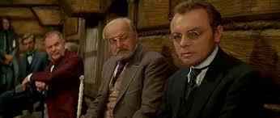
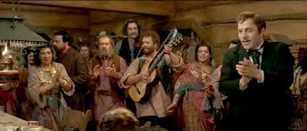
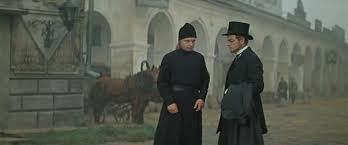
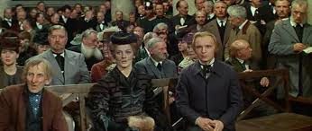

«Братья Карамазовы» — последний роман Фёдора Михайловича Достоевского, вершина его творчества, в каком-то смысле главный труд всей его жизни и одно из величайших произведений в истории мировой литературы.
Загадка, связанная со смертью и кражей, полная накала и страстей любовная история, разворачивающаяся на глазах читателя семейная драма, сложные психологические перипетии, множество вплетенных в основную канву других остросюжетных линий — все это вместилось в роман "Братья Карамазовы", главной проблематикой которого является вопрос о Боге и бессмертии души. А в центре повествования, как всегда у Достоевского, — человек, терзаемый сомнениями, раздираемый страстями, жаждущий любви, власти, денег, мечущийся от добра ко злу и от зла к добру, ищущий свой путь, свою веру, своего Бога.
Роман лег в основу десятков экранизаций — отечественных и зарубежных — и все время становится предметом режиссерских экспериментов. Но, наверное, правы те, кто считает, что ни одна, даже самая талантливая, постановка не в силах передать всей глубины этой прозы.
Музыкальное сопровождение к сайту
Знаменитые отрывки
«В большинстве случаев люди, даже злодеи, гораздо наивнее и простодушнее, чем мы вообще о них заключаем. Да и мы сами тоже.»
«Чтобы полюбить человека, надо, чтобы тот спрятался, а чуть лишь покажет лицо свое – пропала любовь.»
«В реалисте вера не от чуда рождается, а чудо от веры.»
«И достигли того, что вещей накопили больше, а радости стало меньше.»
«Любовь такое бесценное сокровище, что на нее весь мир купить можешь, и не только свои, но и чужие грехи еще выкупишь.»
«Други мои, просите у Бога веселья. Будьте веселы как дети, как птички небесные.»
«Лгущий самому себе и собственную ложь свою слушающий до того доходит, что уж никакой правды ни в себе, ни кругом не различает, а стало быть, входит в неуважение и к себе и к другим.»
«Ибо знайте, милые, что каждый единый из нас виновен за всех и за вся на земле несомненно, не только по общей мировой вине, а единолично каждыйвсех людей и за всякого человека на сей земле. Сие сознание есть венец пути иноческого, да и всякого на земле человека.»
«Никогда люди никакою наукой и никакою выгодой не сумеют безобидно разделиться в собственности своей и в правах своих. Все будет для каждого мало, и все будут роптать, завидовать и истреблять друг друга. Вы спрашиваете, когда сие сбудется. Сбудется.»
«Жизнь полюбить больше, чем смысл ее?»
Братья

Дмитрий Карамазов
Старший сын основного героя – служил военным, но был несерьезным человеком, гулякой и бедокуром. Он слыл игроком, любил проводить время в праздности. Митя эмоционально реагировал на все события. Каторга, куда он был отправлен незаслуженно, изменила его жизнь, заставив порвать с порочными привычками.

Иван Карамазов
Cтарший родной брат Алеши. На людях он ведет себя интеллигентно, любит производить впечатление рационального и циничного человека. Но в глубине души Иван чувствует несправедливость мира, что приводит его в негодование. Персонаж мечтает о всеобщем спасении, но смерть отца его отрезвляет и превращает все мечты в пыль.
Алексей Карамазов
Младший из сыновей Федора Павловича Алексей Карамазов родился во втором браке. Ему автор дает положительные характеристики. Он ушел в монастырь послушником. Добрый, богобоязненный человек, не терпит конфликтных ситуаций, хочет помочь родственникам примириться. Любую ложь Алеша воспринимает болезненно, всегда говорит правду.
Фильм по роману

Братья Карамазовы (1968) - широкоэкранный художественный трёхсерийный фильм — экранизация одноимённого романа Ф. М. Достоевского, осуществлённая в 1968 году. Последняя работа в карьере Ивана Пырьева, скоропостижно скончавшегося до завершения создания фильма. Третью серию картины закончили исполнители главных ролей Кирилл Лавров и Михаил Ульянов. "Братья Карамазовы" — одна из немногих в мировой литературе удавшихся попыток сочетать увлекательный роман-триллер, как мы бы выразились теперь, с глубинами философской мысли. В нем занимают по преимуществу вопросы о природе человека, о корнях зла и источниках добра, о том, как соотносятся эти начала в душе человека, в мире, в котором он живёт.
Подробнее
10 января 1969 (1, 2 серии), 3 февраля 1969 (3 серия)
Серий
3
Количество зрителей в СССР
26 800 000
Жанр
мелодрама, экранизация
Места съемок
Ростов (Ростовский Кремль, Торговые ряды и церковь Спаса-на-Торгу), Суздаль, Истра, Сергиев Посад




Выводы о прочтении
В этом романе Достоевский показывает все пороки «карамазовщины» — моральный упадок героев, цинизм, корысть, жестокосердие, нравственные колебания и сладострастие. Среди главных проблем произведения — вопросы веры и свободной воли, выбора и ответственности, любви и милосердия. В «Братьях Карамазовых» писатель применяет глубокий психологизм, раскрывая внутренний мир персонажей, их страхи, противоречия, чувства и переживания.
Достоевский стремится найти ответы на вечные вопросы бытия и постичь духовность всего сущего, препарируя человеческую душу. Основной мыслью романа становится пронзительная фраза Ивана Карамазова: «Счастье всего мира не стоит одной слезы на щеке невинного ребенка».
При всей испорченности героев, автор верит в возможность их исправления. По мнению Федора Михайловича, оно возможно только благодаря обузданию страстей и приходу к праведной жизни в согласии с Богом.
Чему учит роман
Роман учит читателя не быть жадным и эгоистичным. Автор осуждает такие пороки, как распущенность, порочность, корысть. Писатель напоминает, что исправление мира начинается с самого человека. Книга говорит о терпении и умении видеть доброе даже в злом человеке. Автор показывает, что любой злодей обладает светлыми чертами характера.